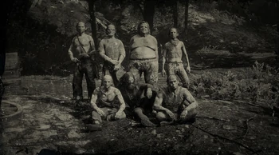
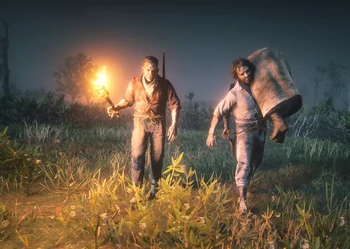

The O'Driscoll Boys are an outlaw gang featured in the Red Dead series; appearing as a secondary antagonistic faction in Red Dead Redemption 2, and as a hostile gang in Red Dead Online. They are led by Colm O'Driscoll and serve as the archenemies of the Van der Linde gang.
Lemoyne Raiders
According to newspapers, the Lemoyne Raiders are made up of both Confederate veterans and recruited, disenfranchised young men with reactionary views. As a result, they are deeply racist, anti-government, and have a bitter desire for revenge against the North. Structured like a militia, the group initially formed up as a neo-Confederate organization that was appreciated by locals. They are involved in numerous rackets, from trading moonshine with the Braithwaite family, among various other illicit goods, to selling arms to buyers in South American countries.lemo
Murfree Brood

The Murfree Brood are known for being unbelievably cruel and territorial and can perhaps best be described as "horribly inbred yokels who murder, loot and pillage all over", owing to their physical deformities and brutal acts of violence. They rarely wear shirts and are considered by some to be more akin to a horde of animals or savages rather than an actual criminal gang. The gang does not appear to have a coherent ideology like the Lemoyne Raiders or the Del Lobo Gang, but rather seem intent on controlling the local area and keeping the populace in terror.
Skinner Brothers
The Skinner Brothers are a gang of ruthless killers and thieves who move from place to place to hunt and kill animals and people alike. The Skinners are notorious for their cruel and sadistic acts and horrific tortures.[1] They're known to, among many things, scalp, dismember, disembowel, roast and flay people alive, being less like an outlaw gang and more like a cult of deranged serial killers.
Laramie Gang
The Laramie Gang are paid thugs used by rich families looking to buy more land. If the current landowner doesn't sell, then the Laramie Gang will find a solution. They start with intimidation, but will happily do anything to make sure they receive their payment. No one is safe when they have a contract, and they take pleasure in killing anyone or anything that gets in their way.
Del Lobo Gang
The Del Lobo Gang consists of mostly Mexican men who are outlaws, exiles, or opportunists. The dispute between Mexico and America has brought this gang to the town of Thieves' Landing, which they use as their main base. Here, they steal, fight, and often kill people.d
Night Folk

The Night Folk are a group of Voodoo-esque killers who live in and around the swamps of Bayou Nwa and Bluewater Marsh. They attack people by setting up traps at night and then rob, loot, and pillage everything of value before murdering their victims in extremely gruesome ways. They can sometimes be seen carrying the corpses of their victims, and dead bodies (whole, partial or otherwise) can be found hanging from and strapped to trees all over the swamp, often gutted, dismembered, or otherwise disfigured.
Foreman Brothers
The gang is led by Anthony Foreman. It is unknown when the gang was formed, but it is seen that the gang is predominately or completely made up of African-Americans.
At some point a young woman called Tilly Jackson joined and ended up killing Malcolm Foreman, one of Anthony Foreman's cousins, before fleeing the gang. Tilly says it was for a justified reason and hints Malcolm tried to make advances on her. Despite her reasons, Anthony seeks revenge on Tilly, viewing her actions as betrayal.
Anderson Boys
The Anderson Boys were founded sometime before 1899, by Anders Anderson. According to the newspapers, they soon instigated a reign of terror in Scarlett Meadows. One of the more notorious crimes they committed was the kidnapping of three wealthy individuals, whom they ransomed back for a sum two thousand dollars each. Two of those they ransomed back were horribly mutilated. Unfortunately for them, the Sheriff of Rhodes as well as his deputy eventually tracked them down shortly after the Van der Linde gang arrived at Clemens Point.
Watson Boys
The Watson Boys are a gang of outlaws that can be found at the Watson's cabin in Big Valley, West Elizabeth. Led by Mama Watson, they consist entirely of her four sons.